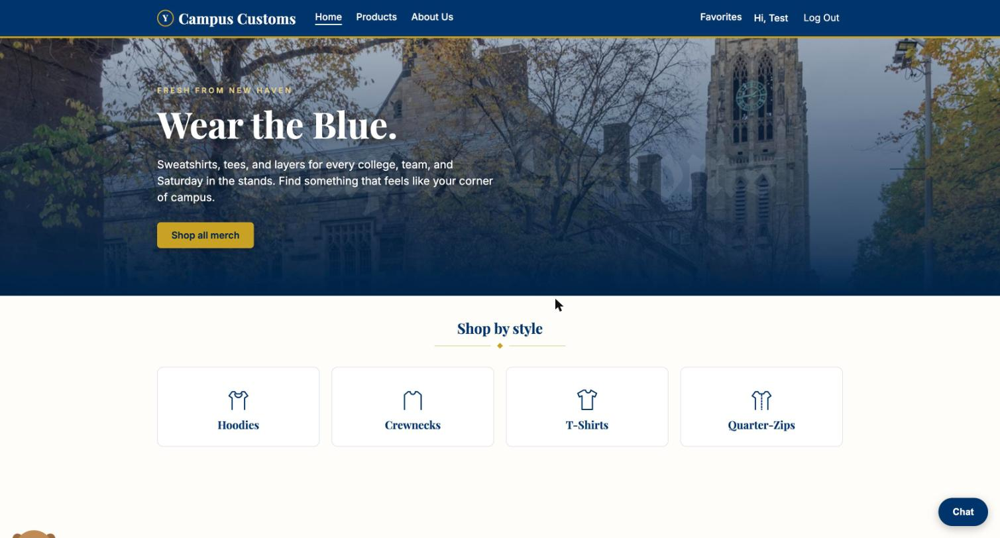
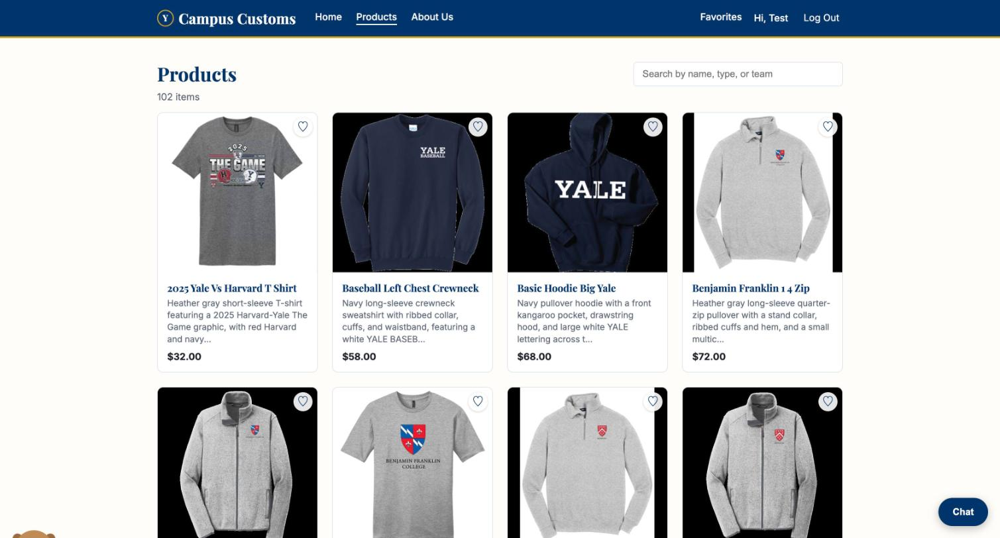
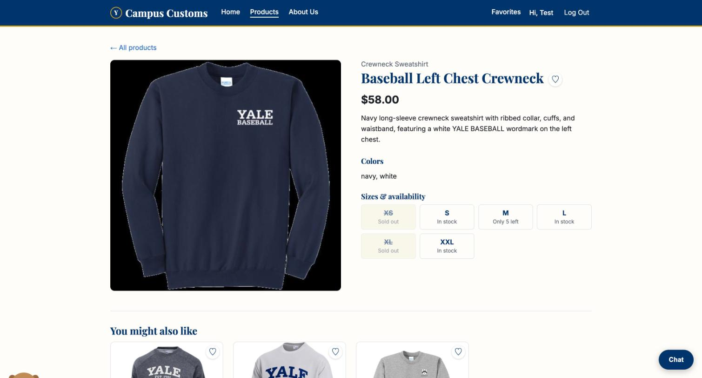
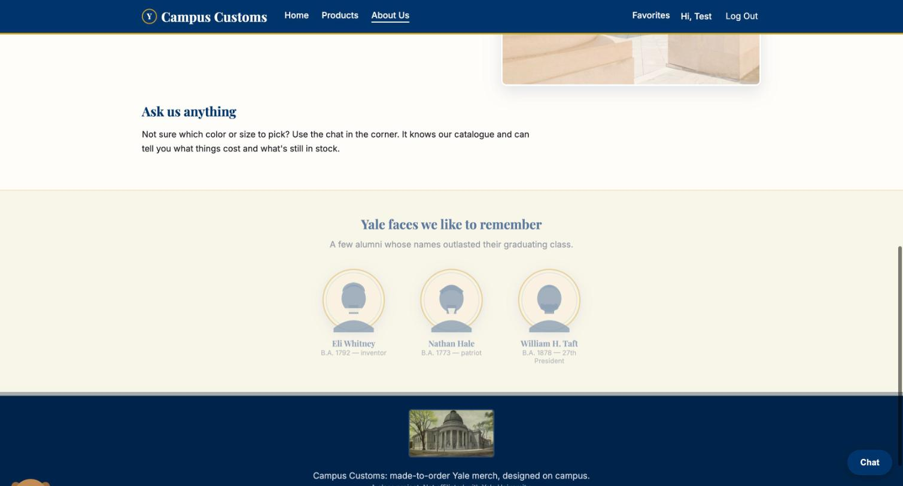
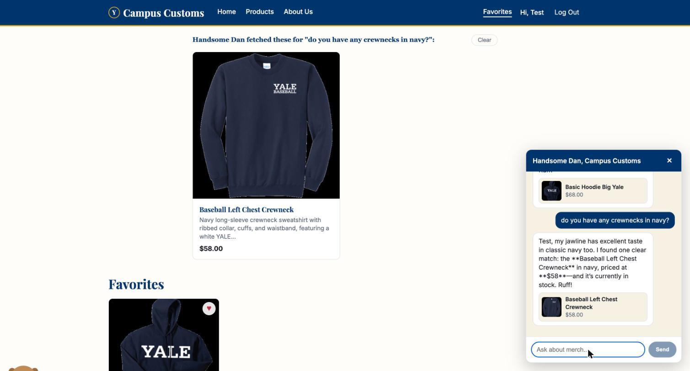
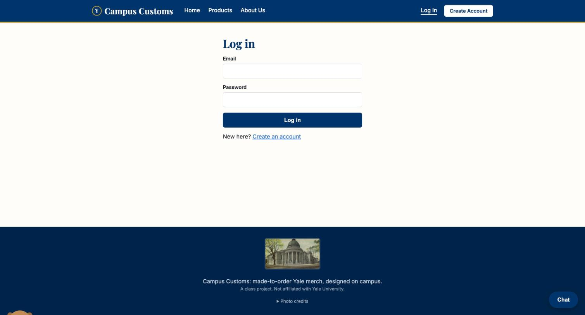

Home page
A real, properly-licensed photo of Harkness Tower as the hero (Problem 11), Playfair Display headings and a gold/navy palette (Problem 10), and the "Shop by style" tiles from the original build (Problem 3). The bulldog mascot is peeking in at the bottom-left.

Products grid
All 102 products from campus_customs.db, each a real card — image, name,
price, a short description — with a search box and a favorite heart (Problem 9) on every
card.

Product detail page
The single-item view from Problem 3: large image, full description, and real per-size
stock from check_stock's database lookup (Problem 6) — note XS and XL
correctly marked sold out. "You might also like" (Problem 9) appears below, picking other
crewnecks by category, falling back to shared color when a category runs short.

About page: alumni gallery
Stylized illustrated cameo portraits (not photos, nobody shown wearing merchandise) of three real Yale alumni, each captioned with their actual name and class year. The footer shows a real c.1905 public-domain postcard of Woolsey Hall and a "Photo credits" disclosure for every licensed photo used on the site.

Favorites
A signed-in shopper's saved-for-later list, persisted to the database (not browser storage) — reloads the same way on any device they log into.

The chat agent, live
Asked "do you have any crewnecks in navy?" — Handsome Dan (the PydanticAI agent) called
search_products, found a real match, quoted its real price and stock, and the
same card appeared live on the page itself (Problem 7), not just inside the chat bubble.
The shopper's existing favorite is still visible below, from the Favorites page they were
already on.

Log in
Email + password login against PBKDF2-hashed passwords in users — verified
against both the seeded test account and freshly created ones.